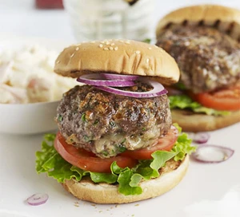

Cheeseburgers Recipe

Description
Keep the kids happy with these wallet-friendly cheeseburgers - ready in just 35 minutes and you can freeze leftovers
Ingredients
- 1kg minced beef
- 300g breadcrumbs
- 140g Mature cheddar, grated
- 4 tbsp WOrcestershire sauce
- 1 small bunch parsley, finely chopped
- 2 eggs, beaten
Steps
- Crumble the mince in a large bowl, then tip in the breadcrumbs, cheese, Worcestershire sauce, parsley and eggs with 1 tsp ground pepper and 1-2 tsp salt. Mix with your hands to combine everything thoroughly.
- Shape the mix into 12 burgers. Chill until ready to cook for up to 24 hrs. Or freeze for up to 3 months. Just stack between squares of baking parchment to stop the burgers sticking together, then wrap well. Defrost overnight in the fridge before cooking.
- To cook the burgers, heat grill to high. Grill burgers for 6-8 mins on each side until cooked through. Meanwhile, warm as many buns as you need in a foil-covered tray below the grilling burgers. Let everyone assemble their own, served with their favourite accompaniments.